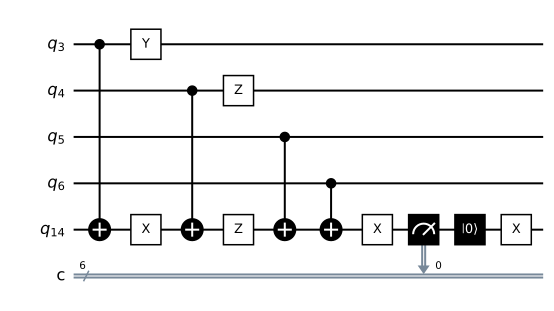

Part 2 · Time and noise · Chapter 6 · 6 min read
Noise models: where errors enter and how often
Noise is a list of places in the circuit and a probability for each. You will be able to say what p means for bit flip, depolarizing and SI1000, and predict which checks each channel lights.
What p means
Noise in Steane Patterns is not a physical process. It is a list of places in the circuit where a random Pauli error (X, Y or Z, from chapter 1) may be inserted, and a probability for each place. A noise channel is that list. The probability scale is the single number p, the physical error probability, and what it multiplies depends on the channel.
There are three channels. Bit flip applies only X errors: before each round, and before the final readout, every data qubit flips with probability . A flipped readout is a measurement error, and it also occurs with probability . Depolarizing noise uses the same places, but when it fires it picks X, Y or Z with equal chance. SI1000 puts noise on every gate and every measurement, with different strengths, and is described below.
Noise is sampled per shot, one complete run of the circuit, and inserted into that shot’s circuit as explicit Pauli gates. The simulator therefore stays noiseless, and every shot is a separate circuit. The table lists each channel exactly as it is defined in engine/noise.py.
| Channel | Data qubit | After CX | After H | Readout | Reset | Prior (data, meas) |
|---|---|---|---|---|---|---|
| bit_flip | X · p | none | none | p | none | (p, p) |
| depolarizing | X, Y or Z · p | none | none | p | none | (2p/3, p) |
| si1000 | 1-qubit · 2p + p/10 | 2-qubit · p | 1-qubit · p/10 | 5p | 2p | (5p, 9p) · approx. |
The depolarizing channel
Write for the state of one qubit. With probability nothing happens. With probability one of the three Paulis is applied, each equally likely, so each has probability :
In words: the qubit is left alone with probability one minus p, and otherwise gets X, Y or Z with a third of the remaining probability each.
This matters for decoding. The Z checks see X and Y errors; the X checks see Y and Z errors. Each check type therefore sees an error on a given qubit with probability , not . That is the first number of the prior, the pair (data, meas) that the decoder believes, per Pauli type. The code holds it as "prior": (2 * p / 3, p). Bit flip has prior (p, p). The next chapter shows how the decoder uses it.
Careful
A depolarizing p of 0.03 and a bit-flip p of 0.03 are not equal noise. The bit-flip channel flips every data qubit with probability 0.03, and the Z checks see all of it. In the depolarizing channel the Z checks see only two thirds of it. Compare channels at the same p only to see this difference, not to rank decoders.
SI1000 and the parallel-idle rule
SI1000 is a circuit-level model inspired by superconducting hardware (Gidney, Newman, Fowler and Broughton, 2021). It adds noise to each operation: two-qubit depolarizing noise with probability after every CX gate, single-qubit depolarizing noise with probability after every H, a readout flip with probability , and a flip after a reset with probability . Data qubits also receive depolarizing noise of at each of the data locations.

Idle noise, the error a qubit collects while it waits, is charged once per round, as if the 12 checks of that round ran in parallel on 12 ancillas. In the simulator one ancilla is measured and reset after every check, which is only a way to stay within the qubit limit (chapter 4). Charging idle noise per check would punish the reuse trick, not the hardware.
Because noise sits on the CX gates, an error on the ancilla in the middle of a check can spread to several data qubits. These hook errors look like a single fault to the circuit but like several to the code. The decoders do not model them: for SI1000 they keep the data and measurement model with rough priors (5p, 9p), marked approx in the code. That is why no optimal-decoder limit is shown for SI1000 (chapter 10), and a decoder facing a real device with an imperfect model is in the same position.
Why it matters here
Every later chapter takes p and a channel as given. The channel decides which checks fire (bit flip: mostly orange Z checks) and the prior decides what the decoder thinks is likely. When the two disagree, as in SI1000, the decoder is working with a wrong map.
Try it in the simulator
Run each channel at p = 0.03 with the Detections view. Bit flip should light mostly orange Z checks. Depolarizing should light orange and blue checks about equally often. SI1000 should light many more cells at the same p, because every gate adds noise.
Bit flip, p = 0.03 Depolarizing, p = 0.03 SI1000, p = 0.03Check yourself
Which checks does the bit-flip channel light, and why?
Mostly the orange Z checks: X errors on data qubits are what Z checks detect. Blue X checks fire only from readout flips.
Why is the depolarizing prior 2p/3 for data?
Each Pauli type is decoded separately. A data qubit shows up in the Z checks when X or Y hits it, and that has probability p/3 + p/3.
What does SI1000 do that the other two channels do not?
It adds noise after every CX and H, on readout and on reset, and charges idle noise once per round. Hook errors follow from the CX noise.
Sources
- C. Gidney, M. Newman, A. Fowler, M. Broughton (2021). A fault-tolerant honeycomb memory. Quantum 5, 605. arxiv.org/abs/2108.10457
Supports: the SI1000 noise model. - M. A. Nielsen, I. L. Chuang (2010). Quantum Computation and Quantum Information, 10th anniversary edition. Cambridge University Press. ISBN 978-1-107-00217-3. www.cambridge.org/9781107002173
Supports: the depolarizing channel (chapter 8 of the book). - Stim documentation. Detector error model file format. github.com/quantumlib/Stim/blob/main/doc/file_format_dem_detector_error_model.md
Supports: how circuit noise becomes independent error mechanisms.